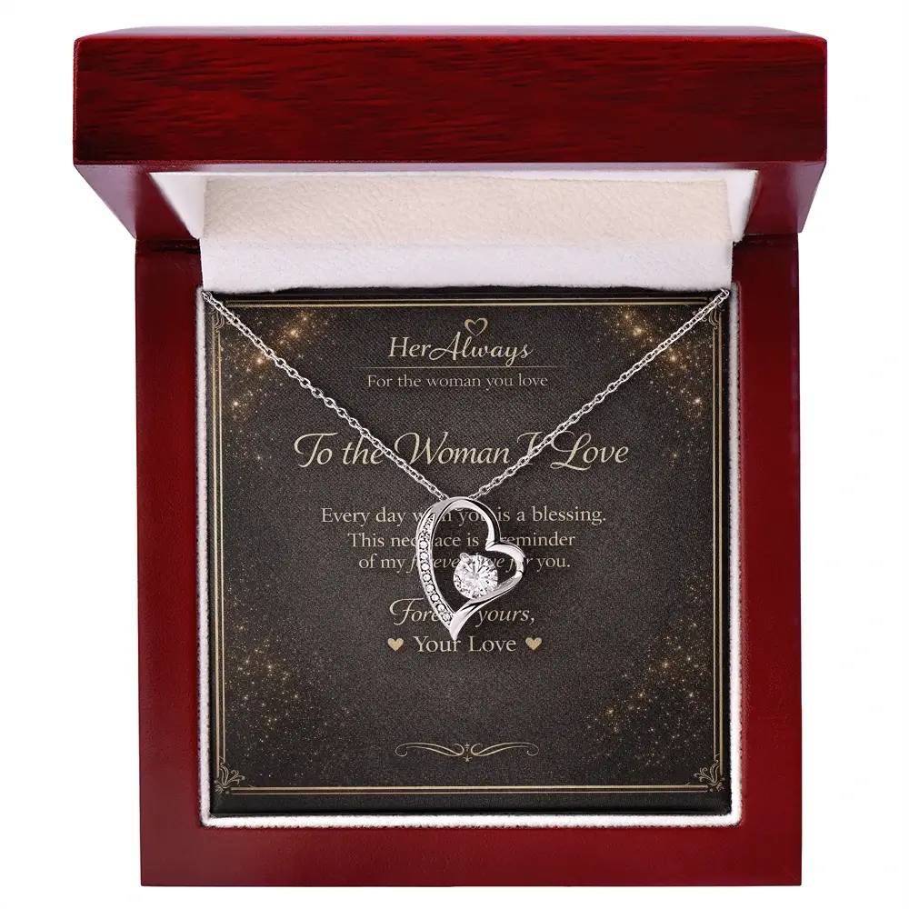
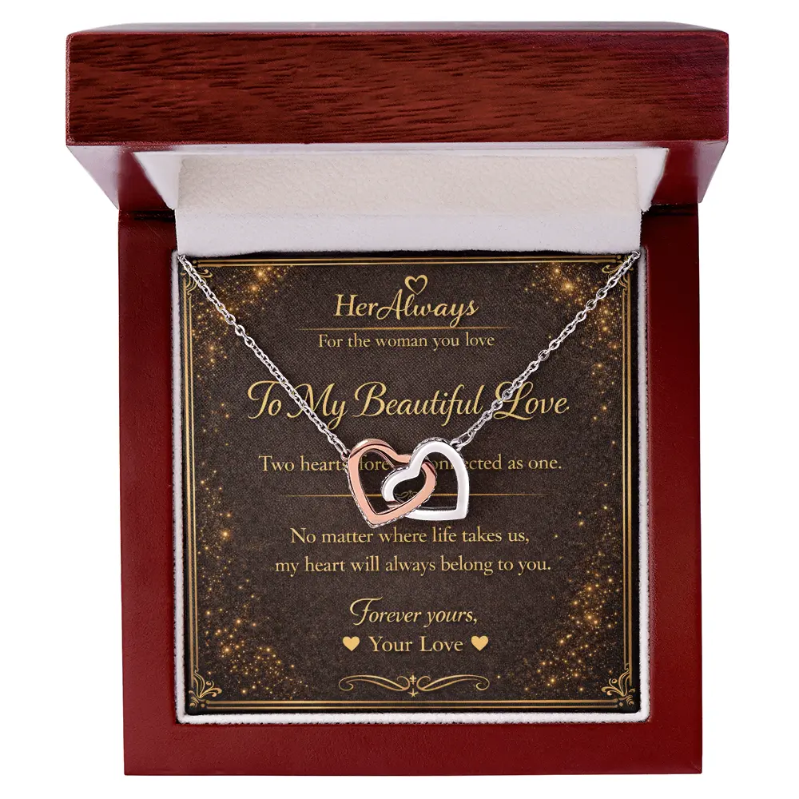
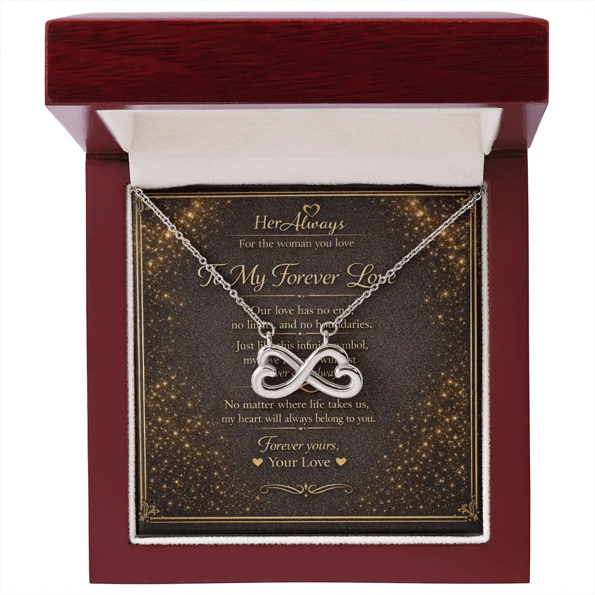
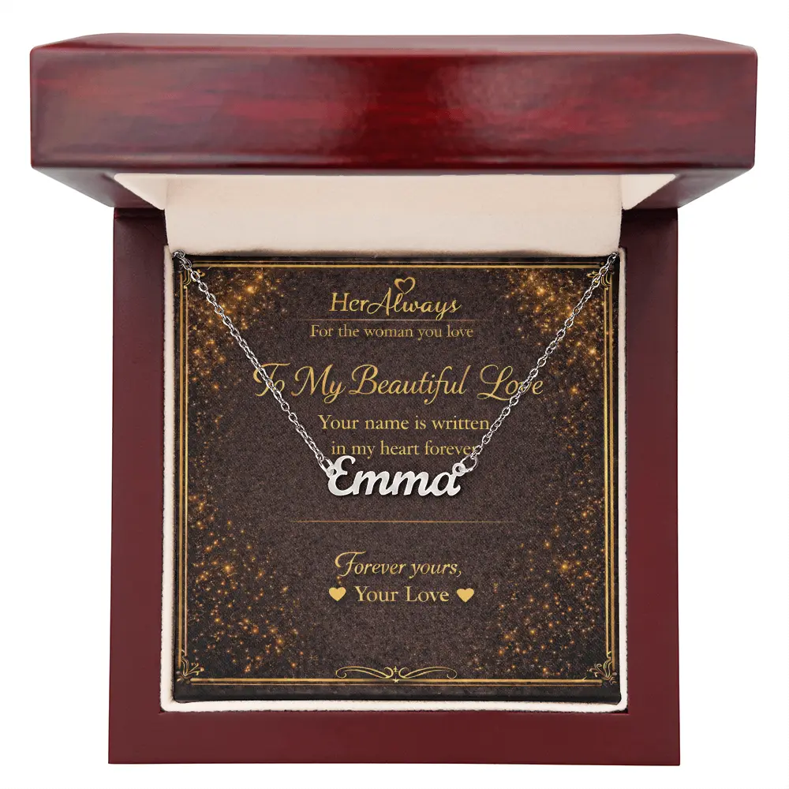
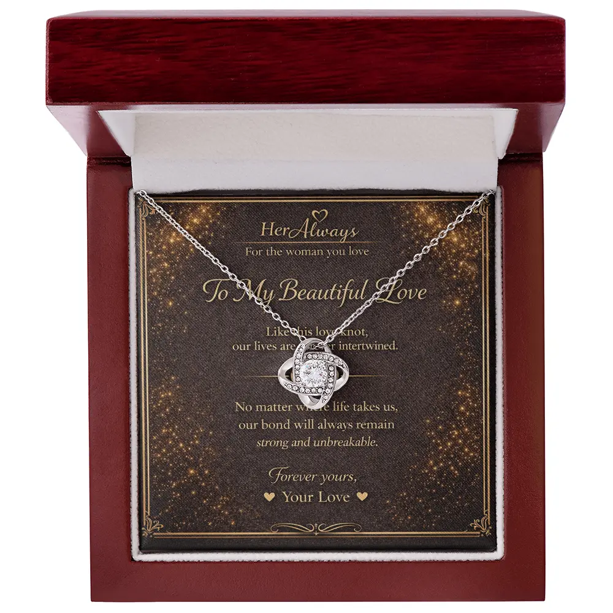

The best necklace for your girlfriend’s birthday is one in the metal she already wears, in a style that fits her taste, with a message from you. Expect to spend roughly $50 to $200. If you are unsure, choose a heart: the Forever Love Necklace ($79.95) suits most women. Order at least three weeks ahead, because ours ship in 6 to 15 business days. Below you will find five necklaces, a budget guide, a birthstone chart and card messages.
Quick Picks by Her Style
4 checks | Budget | 5 picks | Birthstone | Card messages | Order by | FAQ
| She is… | Choose | Price |
|---|---|---|
| Classic and romantic | Forever Love | $79.95 |
| Sentimental, loves symbols | Interlocking Hearts | $79.95 |
| Delicate and minimal | Infinity Love | $59.95 |
| Someone who loves personal things | Custom Name | $69.95 |
| Happy to wear a statement piece | Love Knot | $109.95 |
Silver-tone and white-gold finish only. All five are silver-toned (one heart on the Interlocking Hearts is rose-gold). If she wears only yellow gold, skip to the checks before you spend anything.
4 Checks Before You Buy
A birthday necklace only works if she wears it. These four checks take five minutes and prevent the most common mistake: a lovely gift that stays in a drawer.
1. What metal does she wear?
Look at her earrings, rings, watch and any necklace she wears often. If it is all silver or white tones, buy silver or white tones. If it is all yellow gold, a silver-tone necklace will likely not get worn. If she mixes metals, you have more freedom, and a two-tone piece like Interlocking Hearts can suit her.
2. Is her style delicate or bold?
Does she wear thin chains and tiny pendants, or bigger, noticeable pieces? For delicate taste, a lighter design like Infinity Love or a name necklace fits better. A large stone, like the one on the Love Knot, makes more of a statement.
3. Will it suit her day-to-day?
Think about her work and habits. If she wears one necklace daily and rarely takes it off, choose something she can live in. If she saves jewelry for dressing up, a bolder piece is fine. Either way, the safest gift is one she can picture wearing.
4. Does she have sensitive skin?
If she reacts to some jewelry, check the materials before you buy. We list the materials for every necklace on its product page and in the table below.
How to find out without asking: look at what she wears on a normal day and in recent photos, check which pieces she reaches for, or ask a close friend or sister. If you want to be sure, ask a casual question like “gold or silver person?” during a normal chat. It will not give the surprise away.
What Your Budget Buys
Prices vary by brand, so treat these as a general guide to what you usually get at each level.
| Budget | What you usually get |
|---|---|
| Under $50 | Fashion jewelry, often gold-tone or silver-tone over base metal. Fine for trends, less built for years of daily wear. |
| $50–$120 | Polished stainless steel, gold-finish or plated pieces, and simple sterling silver, often with cubic zirconia. This is where our necklaces sit. |
| $120–$300 | Sterling silver or gold vermeil (gold over silver), often with real gemstones, from known jewelry brands. |
| $300+ | Solid gold, and natural or lab-grown diamonds. |
Materials in plain English
- Gold finish or plated: a thin layer of gold over another metal. It looks like gold at a lower price, but the layer can wear over time.
- Stainless steel: a hard-wearing metal that is a practical choice for everyday jewelry.
- Sterling silver: 92.5% silver. It can darken over time, but a polishing cloth brings the shine back.
- Cubic zirconia (CZ): a lab-created stone that sparkles like a diamond but is not one. “Lab-created” here does not mean lab-grown diamond.
An honest view: at $60 to $110, you are paying for the design, the gift box and the message card, not solid gold or diamonds. If she would want fine jewelry in solid gold or with real diamonds, plan for a bigger budget elsewhere. If you want a polished, meaningful gift that carries your own words, this range does that well.
The 5 Birthday Necklaces
| Necklace | Price | Materials |
|---|---|---|
| Infinity Love | $59.95 | 14k white gold finish over base metal, two heart loops |
| Custom Name | $69.95 | Polished stainless steel, silver-tone, name up to 11 characters, 16–18 in chain |
| Forever Love | $79.95 | Heart pendant, lab-created cubic zirconia (about 6–6.5 mm), 14k white gold finish |
| Interlocking Hearts | $79.95 | Polished surgical steel, cubic zirconia crystals, one rose-gold heart and one silver-tone heart |
| Love Knot | $109.95 | Stainless steel, 14k white gold finish, 6 mm lab-created cubic zirconia |
None is solid gold, and none contains a diamond. Every necklace arrives in a mahogany gift box on a printed message card.

1. Forever Love Necklace Best Seller
Card: “To the Woman I Love.” It is the safest romantic pick, and the heart reads as love without needing explanation. See the heart necklace meaning.
Create Your Gift
2. Interlocking Hearts Necklace
Card: “Two hearts forever connected as one.” The mixed rose-gold and silver tones suit a girlfriend who mixes her jewelry. See the interlocking hearts meaning.
Create Your Gift
3. Infinity Love Necklace
Card: “To My Forever Love.” A good fit if you are apart on her birthday. See the infinity necklace meaning and our long-distance birthday guide.
Create Your Gift
4. Custom Name Necklace
Card: “Your name is written in my heart forever.” Her name, up to 11 characters, made to order. Spell it exactly as she writes it, and order early.
Create Your Gift
5. Love Knot Necklace
Card: “Like this love knot, our lives are forever intertwined.” The largest stone in the collection (6 mm), and a strong message for a serious relationship. See the love knot meaning.
Create Your GiftWant to compare more styles, including initial and locket necklaces? See the 12 best necklace gifts for your girlfriend.
What About a Birthstone Necklace?
A birthstone necklace is a classic birthday idea, and it works if she likes colored stones. We do not sell one, but here is the common modern birthstone list so you can match her month, whether you shop here or elsewhere.
| Month | Stone | Month | Stone |
|---|---|---|---|
| January | Garnet | July | Ruby |
| February | Amethyst | August | Peridot |
| March | Aquamarine | September | Sapphire |
| April | Diamond | October | Opal or tourmaline |
| May | Emerald | November | Topaz or citrine |
| June | Pearl or moonstone | December | Turquoise or tanzanite |
Birthstone lists vary slightly by tradition. If her birthday is in April, the clear stone on the Forever Love or Love Knot echoes the look of a diamond, though it is cubic zirconia, not a diamond. For other months, use the stone’s name in your card message instead.
Write Your Own Birthday Message
Here is where a HerAlways gift differs from many others: you write the card. After you click “Create Your Gift,” you type your own message and it is printed on the card inside the box. If you leave it blank, the sample message on the product page is used. A chain can be replaced one day, but your words stay.

Keep it to two or three lines. One specific thing about her, plus one wish for the year, works better than a long speech.
| Tone | Message idea |
|---|---|
| Sweet | Happy birthday, my love. You make every ordinary day feel like a gift. |
| Short | Happy birthday. I am so glad it is you. |
| New relationship | Happy birthday. Meeting you was the best surprise of my year. |
| Long together | Another year older, and I would still choose you every single time. |
| Long distance | Happy birthday from far away. Wear this and know I am with you. |
| Grateful | Thank you for being the calm in my busiest days. Happy birthday, my love. |
| Light and playful | Happy birthday! I promise this gift is better than my cooking. |
| Name necklace | Your name belongs close to your heart, just like you are close to mine. |
Need more? Browse 70+ necklace gift messages for your girlfriend, or see what to engrave on a necklace.
When to Order So It Arrives on Time
HerAlways necklaces ship worldwide in 6 to 15 business days, and the Custom Name Necklace is made to order. Count the days until her birthday and use this guide:
| Days until her birthday | What to do |
|---|---|
| 22 or more | Order any necklace now, including the Custom Name. |
| 15 to 21 | Order today. It should arrive in time, with little spare time. Give the Custom Name the most buffer, or choose a ready style. |
| 8 to 14 | It may arrive in time, but we cannot promise it. Check our shipping page, and have a backup plan. |
| Under 7 | It will not arrive in time. Order anyway and give her a handwritten card on the day saying the necklace is on its way. |
An “on its way” card with a plan, such as dinner or a call, still feels thoughtful. It beats a rushed gift she will not wear. When it arrives, here is how to give it to her.
5 Birthday Necklace Mistakes to Avoid
- Ignoring her metal. A beautiful necklace in the wrong metal stays in the box.
- Buying bold for a minimalist. Match the size of the piece to what she already wears.
- Misspelling a name. A name necklace is made to order, so check the spelling twice.
- Ordering too late. Order three weeks ahead, not the week before.
- Writing a very heavy message early on. In a new relationship, warm and specific beats “forever.”
Is it her first birthday together? Our first birthday gift guide covers what to give and what to avoid.
Choose Her Birthday Necklace

Not sure? The Forever Love Necklace is our safest pick: a heart pendant, a mahogany gift box and a card with your own message.
Create Your GiftFAQ: Necklace for Girlfriend Birthday
What necklace should I get my girlfriend for her birthday?
Get one in the metal she already wears, in a style that fits her taste. If you are unsure, a heart necklace is the safest romantic choice. Interlocking hearts say you belong together, an infinity necklace says your love has no end, and a name necklace is made for her alone.
How much should I spend on a necklace for my girlfriend’s birthday?
Shops typically list birthday necklaces from about $50 to about $200. At $60 to $110 you can get a polished, gift-ready piece in gold-finish or stainless steel with lab-created stones. Solid gold or real diamonds cost considerably more.
Should I buy a gold or silver necklace for my girlfriend?
Buy the metal she wears every day. Check her earrings, rings and watch. If she wears only silver tones, a yellow-gold necklace will probably stay in the box, and the reverse is also true.
Is a necklace a good gift if we have only been dating a few months?
Yes, if she wears necklaces. Keep the design simple and the card message light. Words like forever can feel heavy early on, so something warm and specific works better.
Should I get a birthstone necklace for my girlfriend’s birthday?
It is a personal choice if she likes colored stones. We do not sell a birthstone necklace, but the birthstone chart above will help you choose one elsewhere if that is what she would love.
What should I write on the card with a birthday necklace?
Keep it to two or three lines: one thing you love about her and one wish for the year. With HerAlways you type your own message and it is printed on the card. If you leave it blank, the sample message shown on the product page is used.
When should I order a birthday necklace?
Order at least three weeks before her birthday. HerAlways necklaces ship worldwide in 6 to 15 business days, and the custom name necklace is made to order.
What if her birthday is too close for delivery?
Order anyway and give her a handwritten card on the day saying the necklace is on its way. A gift that arrives a few days late with a thoughtful note is better than a rushed choice.
Related Guides
About This Guide
This guide is written by Elena Marsh for HerAlways. Prices, materials and shipping times for our necklaces come from our own product pages and were checked on October 30, 2026. The general jewelry and budget notes are broad guidance, not an appraisal, and prices at other shops vary. The birthstone chart is the common modern list. Because we sell necklaces, we point to our own designs where they fit, and we tell you when they do not, such as when she wears only yellow gold.